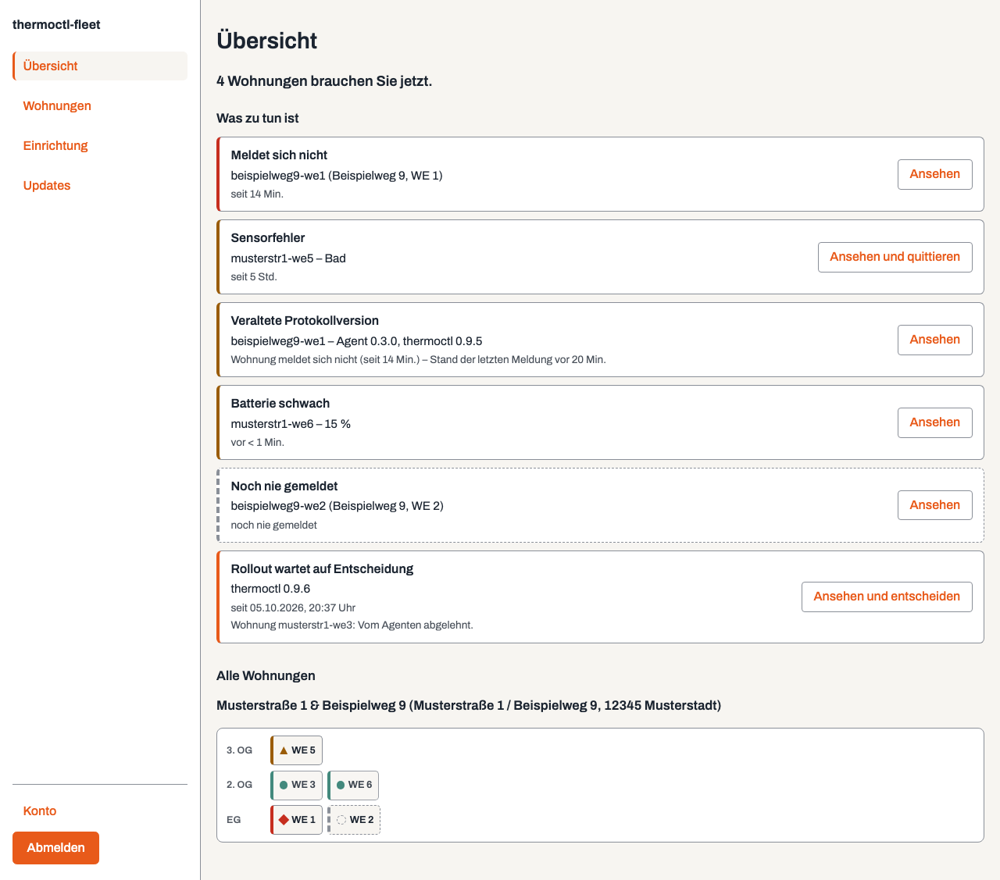
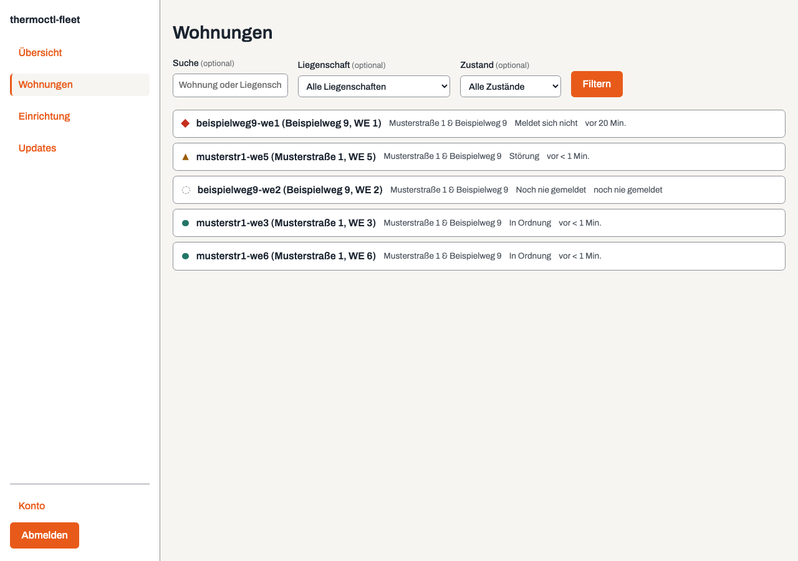
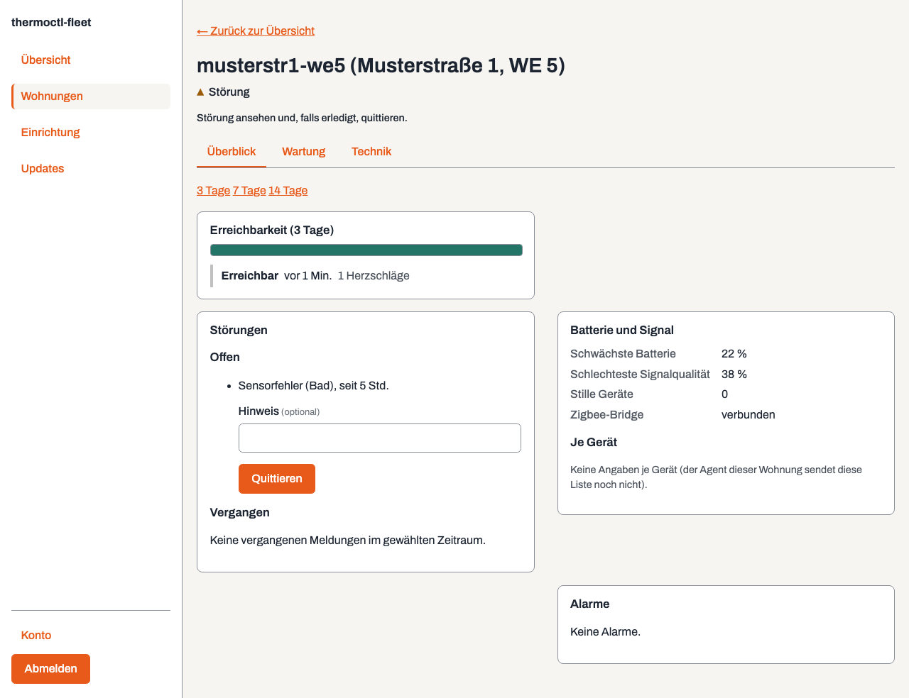
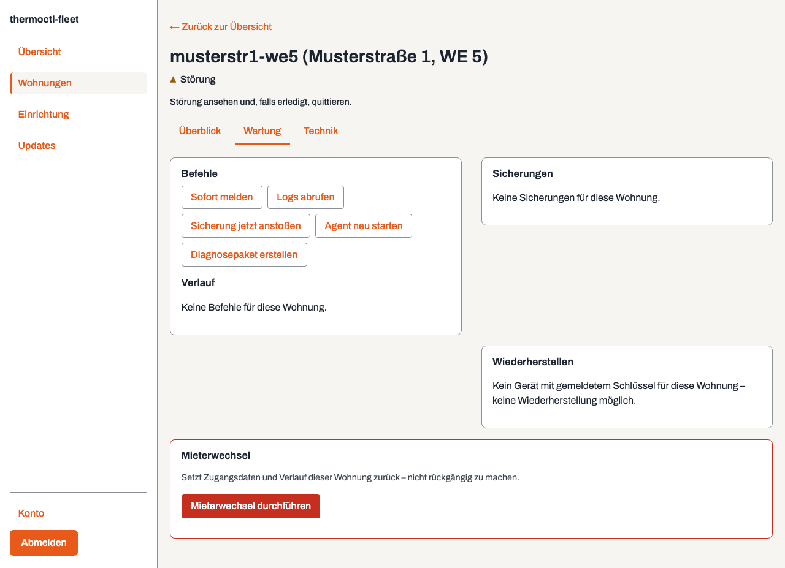
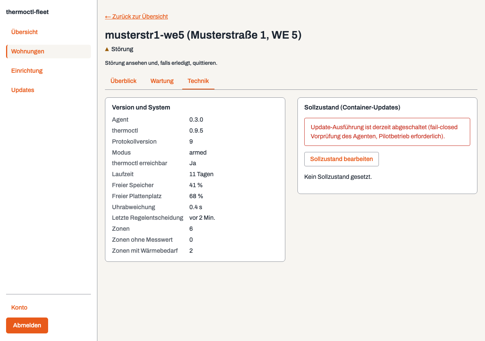
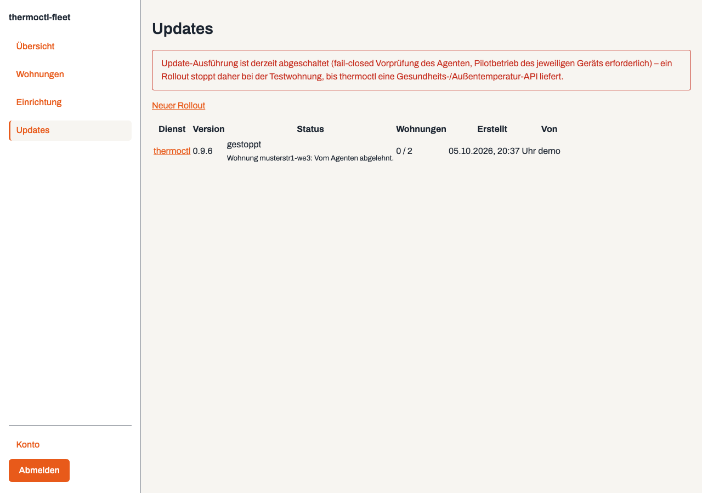

Täglicher Betrieb
Vier Bereiche, nicht mehr: Übersicht, Wohnungen, Einrichtung, Updates – auf dem Desktop eine Seitenleiste links, auf dem Smartphone eine Tableiste unten, dieselbe Reihenfolge an beiden Stellen. Der tägliche Ablauf ist fast immer derselbe: Übersicht öffnen, den Posteingang „Was zu tun ist“ abarbeiten, entweder inline oder durch Öffnen der betroffenen Wohnung. Wer nichts zu tun hat, sieht eine ruhige Oberfläche – das ist Absicht.
Übersicht
Die Startseite beantwortet eine Frage: Was braucht jetzt den Vermieter? Ein Satz oben nennt, wie viele Wohnungen betroffen sind. Darunter der Posteingang „Was zu tun ist“: eine Zeile je Punkt – meldet sich nicht, offene Störung, Batterie schwach, veraltete Version, ein Rollout, das auf Entscheidung wartet. Jede Zeile führt über „Ansehen“ (teils „Ansehen und quittieren“ bzw. „…und entscheiden“) genau dorthin, wo die eigentliche Aktion schon liegt – quittiert wird auf der Wohnungsseite selbst, entschieden auf der Rollout-Seite; nichts davon wird im Posteingang noch einmal nachgebaut. Ist der Posteingang leer, steht dort nur ein ruhiger Satz. Darunter folgt die kompakte Lageübersicht nach Gebäude und Stockwerk, eine Kachel pro Wohnung – eine unauffällige Wohnung erscheint ausschließlich hier, nie im Posteingang.

Wohnungen
Eine flache, durchsuch- und filterbare Liste aller Wohnungen – nach Name oder
Liegenschaft per Suchfeld, zusätzlich nach Liegenschaft und nach Zustand. Alle
drei Filter sind ein einfaches GET-Formular: eine gewöhnliche
Seite, kein JavaScript nötig.

Eine Wohnung: drei Reiter
Kopfzeile mit Zustand und der einen nächsten Handlung, darunter drei Reiter –
Überblick, Wartung, Technik.
Jeder Reiter rendert serverseitig nur seinen eigenen Inhalt
(?ansicht=ueberblick|wartung|technik), die anderen beiden werden
nicht etwa nur per CSS versteckt mitgeladen – auch über eine langsame
Verbindung lädt jeweils nur, was gerade zu sehen ist.



Störungen und Quittierung
Die sechs thermoctl-Störungsarten (sensor_fault, bridge_fault,
command_failure, stuck_sensor, window_alarm,
tenant_report) laufen in der Cloud zusammen. Eine Quittierung gilt nur für
das aktuelle Auftreten – tritt dieselbe Störung erneut auf, erscheint sie wieder.
Beim Mieter-Problembericht (tenant_report) wird nur übertragen, dass
einer existiert, mit Zeit und Raum – der Text selbst bleibt in der Wohnung
(Abschnitt 6).
Alarme
| Alarm | Auslöser | Dringlichkeit |
|---|---|---|
| Wohnung meldet sich nicht | drei Heartbeats fehlen (6 Minuten) | hoch, während der Heizsaison |
| thermoctl antwortet nicht | Agent erreicht es lokal nicht | hoch |
| Steuerung steht still | letzte Entscheidung älter als drei Regelzyklen | hoch |
| Störung offen | eine der sechs Arten, länger als 2 Stunden | mittel |
| Batterie niedrig | schwächste Zelle unter 20 % | niedrig, gesammelt bis zur Batterierunde |
| Signalqualität fällt | schlechtester Wert unter 30, über mehrere Tage | niedrig |
| Versionsrückstand | Wohnung mehr als zwei Versionen zurück | niedrig |
| Speicher voll | unter 10 % frei | mittel |
| Uhrabweichung | mehr als 60 Sekunden | mittel (Zeitpläne laufen falsch) |
Jeder Alarm hat eine Entwarnung und ein Schlummern („bis morgen früh“). Wiederholte Alarme derselben Art für dieselbe Wohnung werden gebündelt.
Befehle
| Befehl | Wirkung | Risiko |
|---|---|---|
report_now | Sofort einen Heartbeat senden, statt auf das Intervall zu warten | keines |
fetch_logs | Die letzten n Zeilen des Dienst-Logs, maskiert, an die Cloud | Inhalt, daher maskiert und auf 500 Zeilen begrenzt |
backup_now | Ein Datenbank-Backup auslösen und das Ergebnis melden | keines |
agent_restart | Nur den Agenten neu starten | keines |
diagnostic_bundle | Logs der vier Dienste, Versionen und Digests, Container-Zustände, Speicher- und Plattenauslastung, Zigbee-Netzwerkzustand, letzte Steuerungsentscheidungen – maskiert, gebündelt, hochgeladen | macht eine SSH-Sitzung in den meisten Fällen überflüssig |
Jeder Befehl trägt eine Id und wird höchstens einmal ausgeführt, hat eine Ablaufzeit (üblicherweise 15 Minuten), und jeder Befehl samt jeder Ablehnung landet im lokalen Protokoll der Wohnung – nicht nur in der Cloud.
Backups & Restore
Zwei Arten von Backup, die nicht gemischt werden: Gerätekonfiguration (keine Mieterdaten, liegt in der Cloud im Klartext) und Betriebsdaten (thermoctl-Datenbank, Zigbee2MQTT-Gerätetabelle – enthält Mieterdaten, wird auf dem Gerät verschlüsselt, bevor sie hochgeladen wird). Ein Restore läuft über dieselbe Oberfläche: der Entschlüsselungsschlüssel wird einmalig eingegeben, im Browser lokal für genau dieses Gerät verschlüsselt, und von der Cloud nur durchgereicht – nie gespeichert.
Einrichtung
Drei Unterbereiche, als Reiter: Objekte & Wohnungen (Immobilien und Wohnungen anlegen), Basisstationen (Geräte registrieren, vorbereiten, ersetzen) und Neue Basisstation vorbereiten – eine geführte Schrittliste (Gerät registrieren → Vorbereiten → Ausliefern → Bestätigen), jeder Schritt verlinkt zum passenden Formular im jeweils anderen Reiter oder zur Bestätigungsliste. Details zum Ablauf: Wohnung hinzufügen.
Updates
Container-Updates laufen über Soll-Zustand, nie als Fernsteuerungsbefehl für eine einzelne Wohnung. Ein Rollout schaltet Wohnung für Wohnung weiter, mit Rückfallpfad auf die alte Version, falls nach dem Update 15 Minuten lang kein Heartbeat ankommt. Ein gestoppter Rollout wartet auf eine Entscheidung (fortsetzen oder abbrechen) – tritt dieser Fall ein, erscheint er zusätzlich als eigene Zeile im Posteingang der Übersicht.

Mieterwechsel
Eine ausdrückliche Aktion auf der Wohnungsseite, Reiter „Wartung“, dort in einer eigenen, rot umrandeten Zone abgesetzt (Bestätigung, Pflichtgrund, protokolliert). Sie rotiert den Gerätetoken der Wohnung – der Agent holt den neuen über eine signierte Herausforderung mit seinem bestehenden Geräteschlüssel, kein privater Schlüssel verlässt dabei je das Gerät – und löscht die Heartbeats, Ereignisse, Störungen, Alarme, Befehlsprotokoll-Auszüge und Diagnosebündel der Wohnung. Verschlüsselte Backups bleiben, unter eigener Aufbewahrungsfrist.
Anmeldung
Passwort und TOTP, optional ergänzt durch einen Passkey (WebAuthn) als zweiten Faktor. Siehe Benutzer anlegen.
Passwortlose Anmeldung mit Passkey aus bekannten Netzen
Von den eigenen, bekannten externen Adressen des Vermieters genügt ein Passkey
allein – kein Passwort, kein Bestätigungscode. Eingerichtet über
FLEET_UI_PASSWORDLESS_NETWORKS: eine kommagetrennte Liste von
IP-Adressen/CIDR-Bereichen, dieselbe Schreibweise wie
FLEET_UI_TRUSTED_PROXIES (siehe Einstieg).
Leer bzw. nicht gesetzt (Vorgabe) = aus. Die Variable ist reine
Server-Konfiguration und bewusst nicht über die Oberfläche änderbar.
Nur globale, enge Netze werden akzeptiert: Einträge breiter als
/16 (IPv4) bzw. /32 (IPv6) werden abgelehnt, private, lokale und ungültige
Einträge mit einer Warnung verworfen. Läuft die Oberfläche hinter einem
Reverse-Proxy, muss zusätzlich FLEET_UI_TRUSTED_PROXIES gesetzt
sein – sonst erscheint jede Anfrage so, als käme sie vom Proxy selbst, und die
Funktion bleibt wirkungslos (sicher geschlossen, nicht versehentlich offen für
das gesamte Internet).
Ein getipptes Passwort wird weiterhin immer geprüft, wenn eines eingegeben wird; ein Bestätigungscode allein genügt nie. Nur das Zusammenspiel aus bekanntem Netz und einer bestätigten Passkey-Anmeldung lässt das Passwortfeld leer bleiben. Auf der Anmeldeseite erscheint dafür in einem bekannten Netz der Hinweis „Du bist in einem bekannten Netz: Mit Passkey brauchst du kein Passwort und keinen Bestätigungscode – Benutzername eingeben und „Mit Passkey anmelden“ wählen.“
Sperren, Drosselung pro IP und Fehlzählung bleiben in jedem Fall identisch zur normalen Anmeldung – eine fehlgeschlagene passwortlose Anmeldung zählt genauso zur Sperre wie ein falsches Passwort.